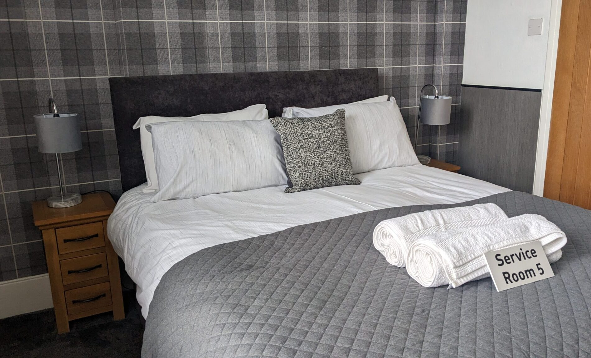
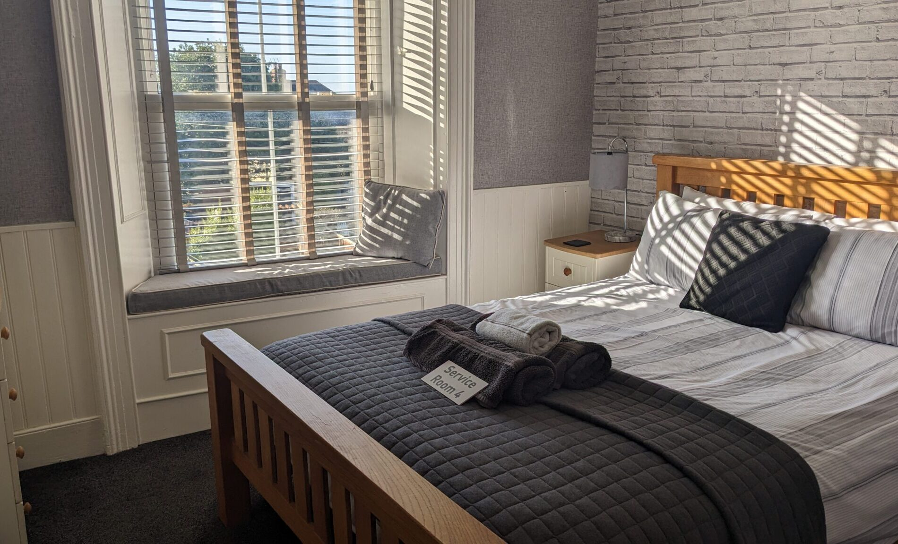
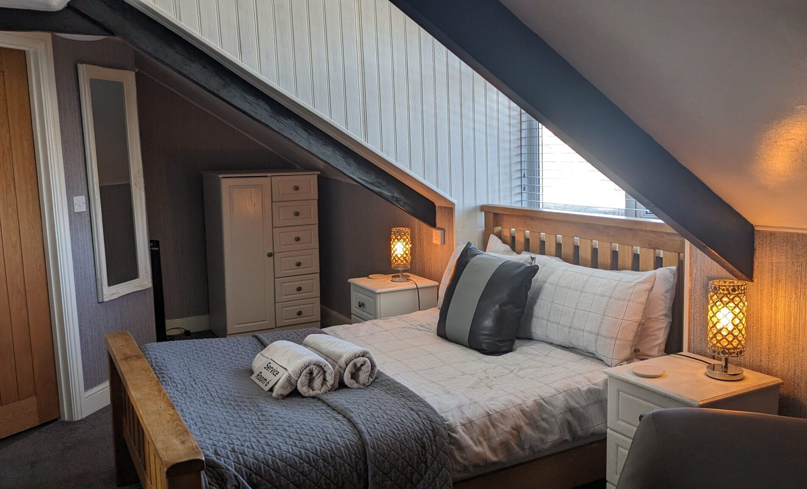
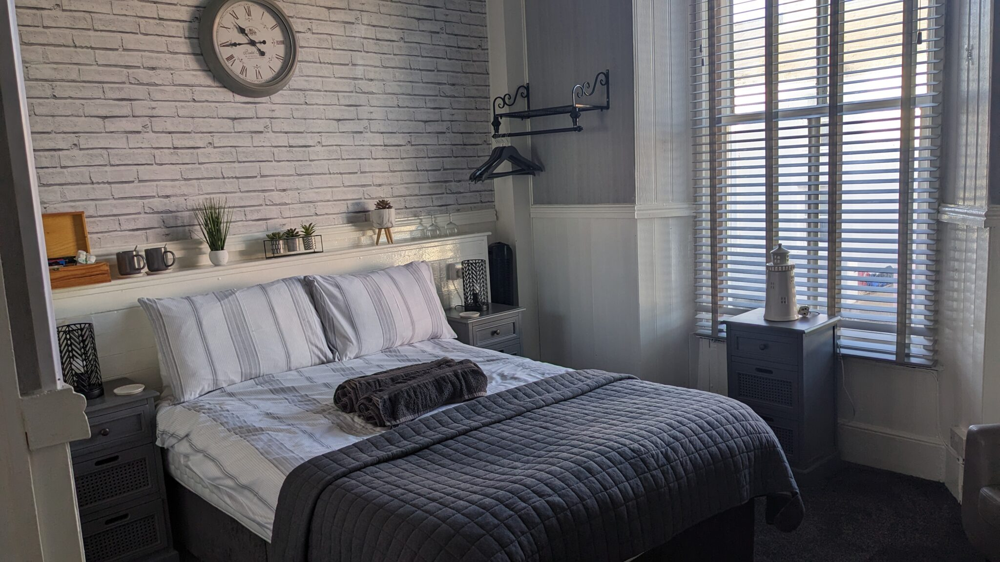
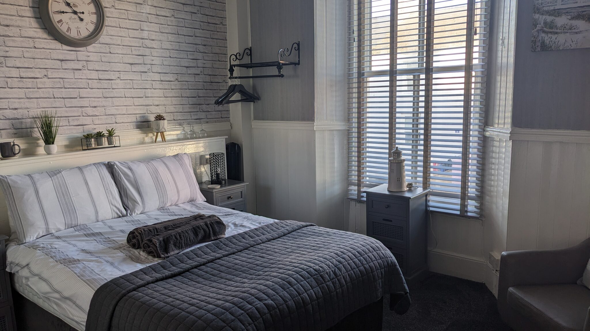
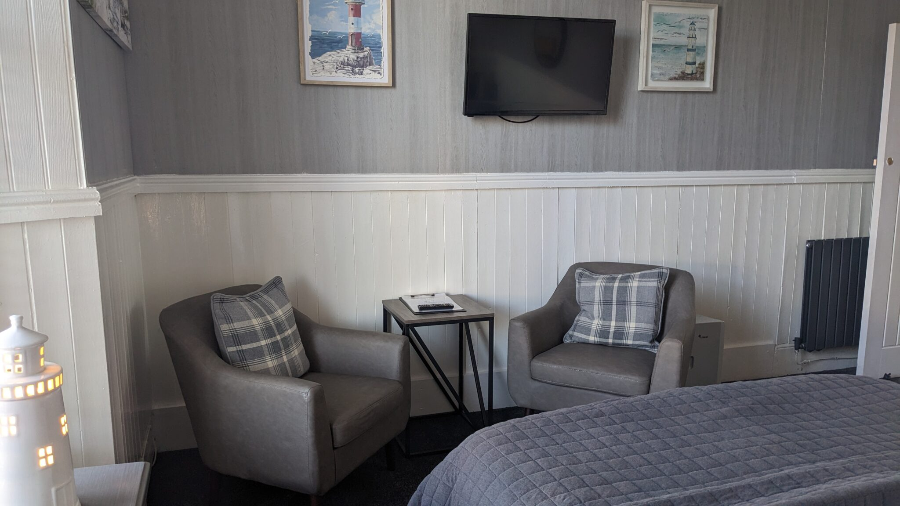
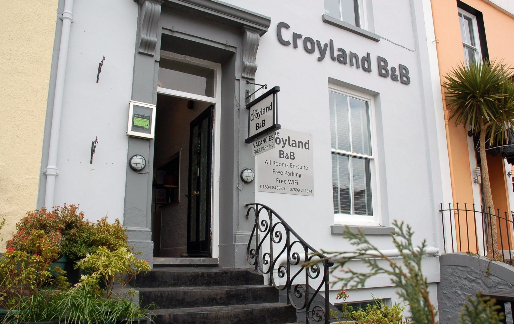
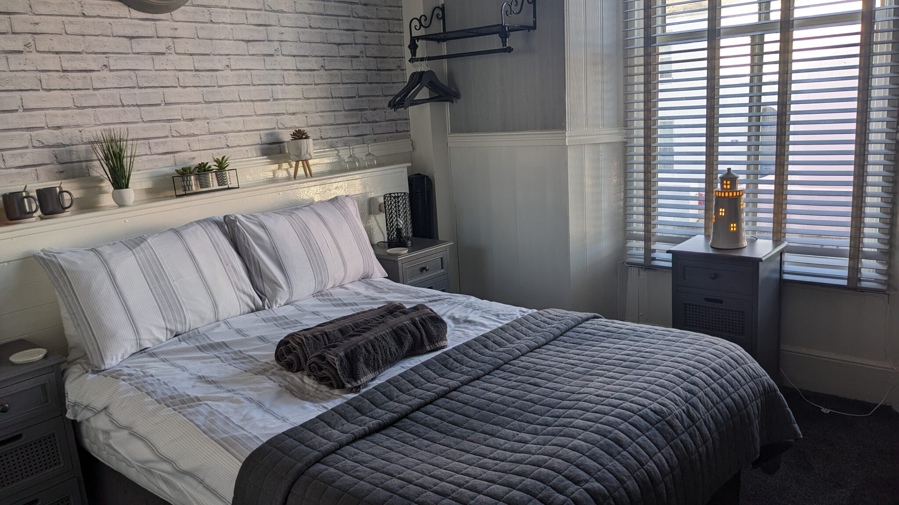

Clean, comfortable en-suite rooms in the heart of Tenby — with free secure parking
See Our Rooms
A family-run bed & breakfast at 10 Deer Park, Tenby, run by owners Stephen & Clair — just a short walk from Tenby's medieval town centre and its award-winning beaches.
Our five en-suite rooms are spotlessly clean and comfortable, each with a flat-screen TV, mini-fridge, iron and ironing board, and an extensive complimentary tea tray. Fresh towels are provided daily on request.
Breakfast is a highlight: a full cooked breakfast made with locally sourced Welsh produce. Guests also receive their own keys, so you can come and go at any time.
All rooms en-suite · Rates on request — contact us direct on 01834 843880 for the best price, guaranteed
Spacious king-size suite with en-suite bathroom and TVs in both the bedroom and the adjoining sitting area.
Rates on request

Spacious king-size suite with en-suite bathroom and TVs in both the bedroom and the adjoining sitting area.
Rates on request

Comfortable double room with en-suite shower bathroom and flat-screen TV.
Rates on request

Comfortable double room with en-suite shower bathroom and flat-screen TV.
Rates on request

Comfortable double room with en-suite shower bathroom and flat-screen TV.
Rates on request

A full cooked breakfast of locally sourced Welsh produce, served fresh each morning.
Included with your stay


10 Deer Park, Tenby, Pembrokeshire, SA70 7LE
Phone: 01834 843880 · Mobile: 07599 241674
Email: stay@thecroyland.co.uk